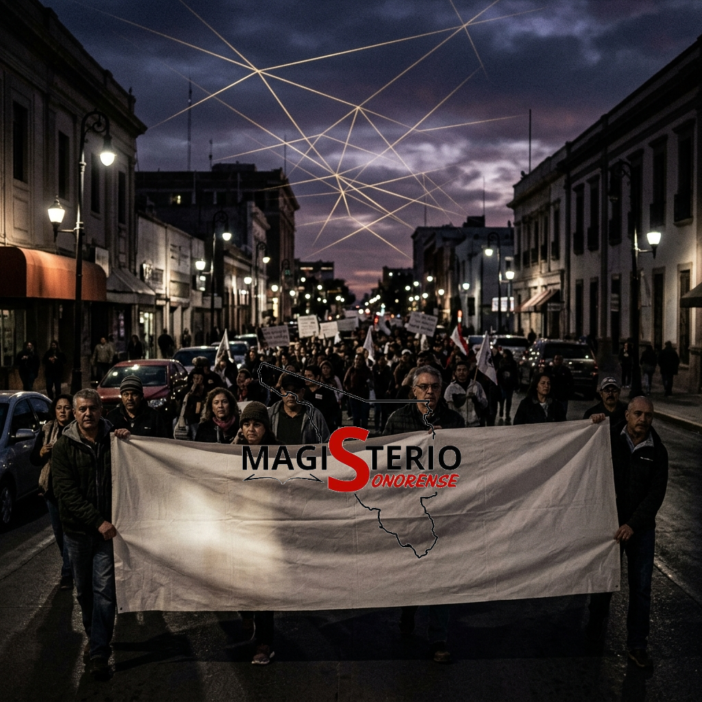
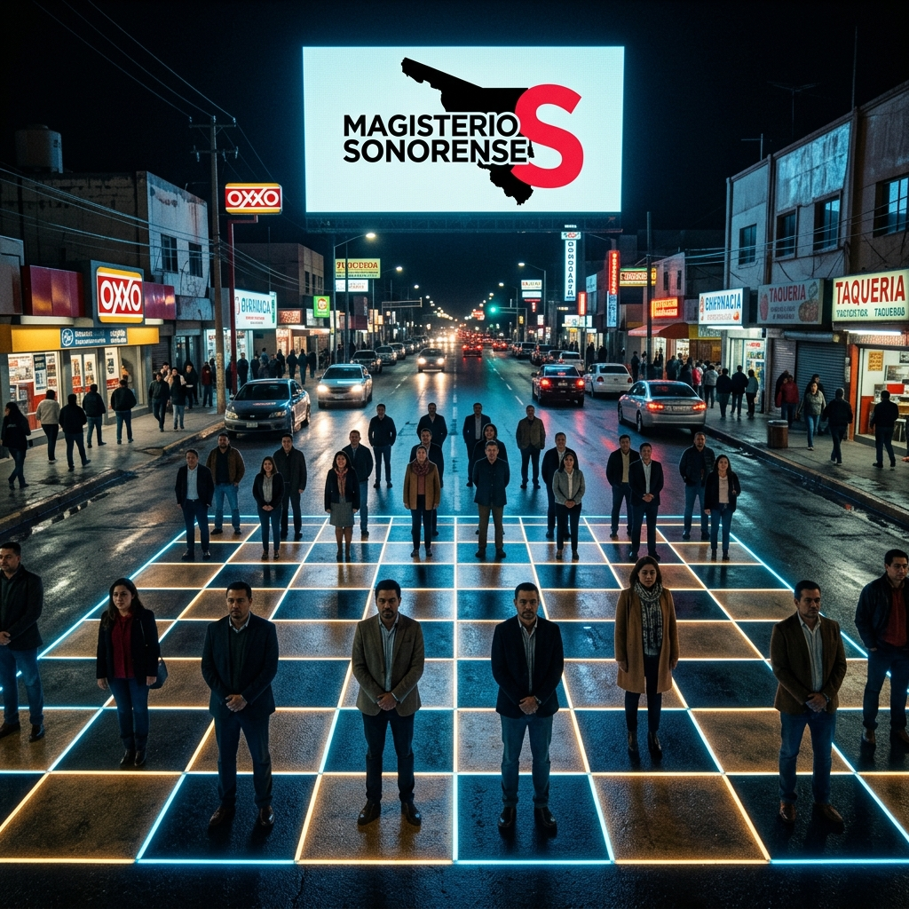

1. El Tablero de Soluciones Mixtas
En el ajedrez político de Sonora, el Estado apuesta por la predictibilidad. Sin embargo, la Teoría de Juegos nos enseña que ante un oponente con recursos superiores, la "Estrategia Mixta" —la aleatoriedad técnica y la coordinación descentralizada— neutraliza la ventaja del adversario. No se trata solo de reaccionar, sino de introducir una incertidumbre táctica que el Game Master institucional no puede modelar. La urbe es nuestro tablero; la base es nuestro motor.

2. La Paradoja del Negociador
Históricamente, el sindicato oficialista ha negociado bajo una premisa de sumisión, aceptando el equilibrio de Nash diseñado por la autoridad. La "Paradoja del Negociador" revela que el beneficio obtenido hoy (el bono inmediato) es a menudo el verdugo de la pensión futura. El Magisterio Sonorense ha identificado esta trampa: ya no negociamos migajas en la oscuridad de las oficinas; ahora exigimos transparencia técnica a plena luz del aula.
3. El FPIP: La Jugada Maestra
Frente al quiebre sistémico, presentamos el **Fondo de Pensión Intergeneracional Protegida (FPIP)**. No es una petición, es una arquitectura de soberanía financiera. Al proponer un fondo blindado donde el ahorro magisterial genera una contraprestación estatal garantizada de 3.25 a 1, el MS altera la termodinámica del despojo. El FPIP es el documento que garantiza que el tiempo de vida dedicado a la educación regrese al docente con dignidad absoluta.
4. El 100% y la Justicia Social
La demanda es clara: un aumento salarial del **100%** para dignificar la labor docente. Esto es independiente de la ingeniería del **FPIP**, que se centra en el ahorro solidario (2% de la base y 3.25 del Estado). Al separar el salario digno de la previsión social, el Magisterio Sonorense garantiza un presente fuerte y un retiro soberano. No aceptamos confusiones técnicas: exigimos el cumplimiento íntegro del pacto social.
5. Ciberbachillerato y Soberanía
La tecnología es el nuevo territorio de la soberanía magisterial. El Ciberbachillerato no debe ser una terminal de consumo de contenidos externos, sino un nodo de producción de conocimiento local. Al apropiarnos de la Inteligencia Artificial y el código, el magisterio sonorense garantiza que la educación del futuro no sea una nueva forma de servidumbre digital, sino una herramienta de emancipación para los plebes y los maestros.
6. El Juego del Dictador y la Justicia MS
En el llamado "Juego del Dictador", un jugador decide cómo repartir una suma entre él y otro. El Estado ha jugado este papel durante décadas con nuestras pensiones. El Magisterio de Sonora rompe esta asimetría: no somos receptores pasivos, sino vigilantes técnicos. Al exigir la auditoría del ahorro solidario, obligamos al "dictador" administrativo a una repartición justa basada en la equidad real y no en el clientelismo.
7. Equilibrio de Nash en la Calle
Si cada maestro actúa solo, todos pierden (Dilema del Prisionero). Pero si logramos la coordinación colectiva, alcanzamos un punto de equilibrio donde el Estado no puede ignorar nuestra fuerza sin colapsar su propia gobernabilidad. La marcha en Ciudad Obregón es la representación física de este equilibrio estratégico: la unidad no es un eslogan, es la solución óptima para el bienestar de la base docente.

8. Reciprocidad: La Estrategia Tit-for-Tat
Inspirados en la teoría de Robert Axelrod, el MS aplica la reciprocidad (Tit-for-Tat): cooperamos con la autoridad si hay transparencia, pero resistimos con firmeza total ante cualquier engaño. Esta estrategia, simple y poderosa, ha demostrado ser la más estable para vencer en juegos repetitivos de negociación política. Si el Estado cumple con el 100% salarial y el 3.25 del FPIP, avanzamos; si traiciona, la base se moviliza.
9. Juegos Dinámicos y el Arca MS
El retiro no es un evento estático, es un "Juego Dinámico" que dura décadas. El Arca Magisterial es nuestro blindaje contra la amnesia institucional. Mediante la protección de los fondos y la vigilancia constante del rendimiento del FPIP, garantizamos que las reglas del juego no cambien a mitad de la partida. El tiempo ya no juega en nuestra contra; ahora juega a nuestro favor gracias al diseño estratégico del movimiento.
10. Sincronía Estratégica: El Jaque Mate
Concluimos el Tomo 8 con la sincronía definitiva. Al dominar las aplicaciones de la Teoría de Juegos, el Magisterio de Sonora ha transformado la "Fábrica de Ignorancia" en un Nodo de Inteligencia. No hay vuelta atrás: el tablero de 2027 nos pertenece. Con el 100% salarial asegurado y un fondo de pensión soberano, el docente sonorense deja de ser una pieza para convertirse en el arquitecto de su propia libertad absoluta.
